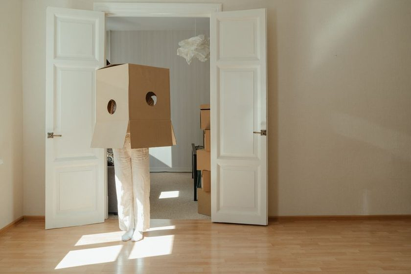

The Hallway as a Shipping Corridor

A move has exactly one route that matters: the shortest, clearest line between the front door and the back of the truck. Everything else — which room gets packed first, how a box is labeled, what shelf something came off of — happens in service of that line. Most people never walk it in advance. They find out where it narrows, where it turns twice in six feet, or where a side table has been blocking a doorway for years, at the exact moment they're holding something heavy and can't set it down. A shipping company would never load a dock without first checking the access route to it. A home move deserves the same five minutes, and almost never gets them.
Every Route Has a Choke Point
Every home has one section that's narrower than the rest of the path — a foyer pinched between a closet and a wall, a hallway that loses width at a light switch, a stairwell that turns before it reaches the landing. That single point, not the truck's cargo door and not the widest room in the house, sets the maximum size for anything carried through on two feet. A shipping corridor works the same way: its real capacity is set by the narrowest bridge or tunnel along the route, not by the open highway on either side of it. Nobody plans a shipment around the easy stretch. They plan it around the point where it gets hard, and a hallway is exactly that point in most homes.
The route decides what fits through it. The house decides nothing until someone is already carrying something.
Walk the Corridor Empty-Handed First
Before a single box moves, walk the route from door to truck with nothing in your hands. This sounds unnecessary until it's skipped, and then it's the reason a dresser gets stuck sideways in a doorway with a crew standing around it. Look for what a busy eye skips over: a rug that bunches underfoot, a doorstop angled into the swing path, a thermostat or light switch sitting at exactly shoulder height along the wall. None of these register as obstacles during ordinary life. All of them register instantly the moment two hands are full and can't be freed to fix anything. The same discipline extends to what ends up inside the boxes moving through that corridor — The Weight, Not the Room covers the parallel mistake of sorting by where a box came from instead of what it will do to whoever carries it.
Pick a Direction and Hold It
A loading dock rarely has people walking freight in both directions through the same doorway at once — it slows everyone down and multiplies the chance of a collision in a tight spot. A home move benefits from the same one-way discipline. Send loaded carriers out along one side of the route and bring empty-handed people back along the other, or stagger timing so nobody meets a fully loaded neighbor at the choke point. It feels like overkill for a two-person move. It stops being overkill the moment a third or fourth helper shows up and everyone is improvising their own path through the same six feet of hallway.
Field Note
Clear the entire corridor once, before the first box moves — not gradually, as things get in the way. A route cleared in pieces gets re-cluttered by whatever just got carried out of the last room, and the choke point never actually opens up.
What the Turns Decide
A straight hallway is forgiving. A turn is not, because furniture doesn't pivot in place — it needs the diagonal space to swing through a corner, and that diagonal is almost always wider than either wall it's turning between. This is why a couch that clears a doorway in a straight line jams solid two feet later at a 90-degree turn, and why the fix is rarely to push harder. It's to measure the corner before moving day, not during it, and to know in advance which pieces need a door lifted off its hinges or a leg removed to make the turn at all.
| Segment | Common Bottleneck | What It Caps | Check Before Moving Day |
|---|---|---|---|
| Front door threshold | Storm or screen door swinging inward | Box width passing single file | Prop both doors open and measure the clear gap, not the frame |
| Hallway turn | 90° corner narrower than either straight run | Length of rigid items — dressers, mattresses, frames | Measure the diagonal a large item needs to pivot through |
| Stairwell landing | Handrail plus a mid-flight turn | Two-person carries on anything wide | Walk the stairs holding a broom horizontally to test clearance |
| Truck ramp or curb | Grade change at the street | Cart wheels and stacks over three boxes high | Confirm ramp angle and curb height match the dolly in use |
A Five-Minute Route Check
None of this requires a tape measure and a clipboard, though both help. It requires walking the route once with the sole job of finding what will stop a loaded carrier, not what looks untidy.
- Walk door to truck empty-handed and note every point where the path narrows or turns.
- Measure the tightest turn's diagonal against the largest piece of furniture leaving through it.
- Clear rugs, doorstops, and low furniture along the full corridor in one pass, not room by room.
- Decide the direction of travel in advance and brief anyone helping before the first box moves.
- Recheck the choke point once it's cleared — if it's still tight, plan to disassemble, not force it.
A route mapped in advance rarely saves time on the easy boxes. It saves the move on the one piece that doesn't fit the first way anyone tries it, and it's usually the same piece that gets set down mid-hallway, blocking the corridor for everything behind it. The Last-Box Problem looks at why that stranded item is so often the one nobody planned a path for in the first place.
Read Also
- Reading the Truck Bed Before You Load ItThe route inside the house sets up the route inside the truck — the base layer decides everything stacked after it.
- A Stacking Order for Fragile LoadsFragile doesn't mean light, and light doesn't mean it goes on top.
- Density Per Box, ExplainedTwo boxes the same size can carry a completely different load through the same corridor.